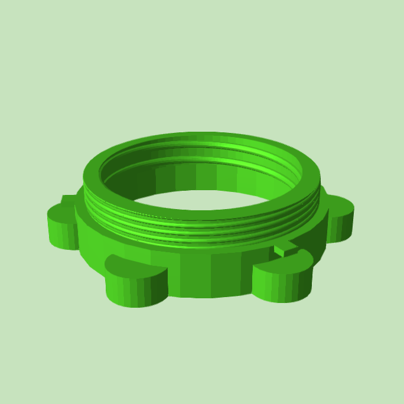

This converts the magic bullet blender so it's compatible with regular sized mason jars. My understanding is that many blenders are already mason jar compatible, but the magic bullet has a nice form factor.
Please note that this also allows you to bypass some safety features, since it is now possible to have exposed blades. Also mason jars are not made of tempered glass like regular blender containers, so if the jar was to break while the blender was running I imagine the results would be pretty horrific.
Must be printed with supports.
Unfortunatly the thread library I used is incredibly ineffecient. I didn't realize that going in but I had already taken the measurements... On account of that I don't really consider this parametric, if you wanted ot make this parametric start by choosing a better thread library. Otherwise prepare for like 30 minute plug compile times on a good computer, and the preview not working because of how bad the thread library is.

Copyright 2019-2023 Alex Davies
Revision history